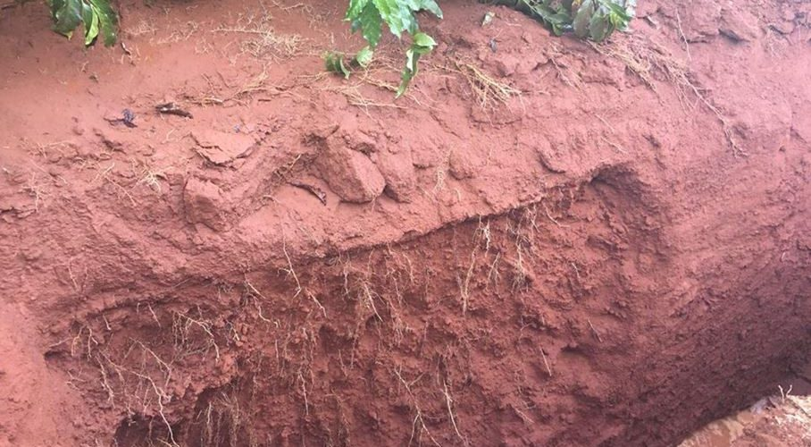
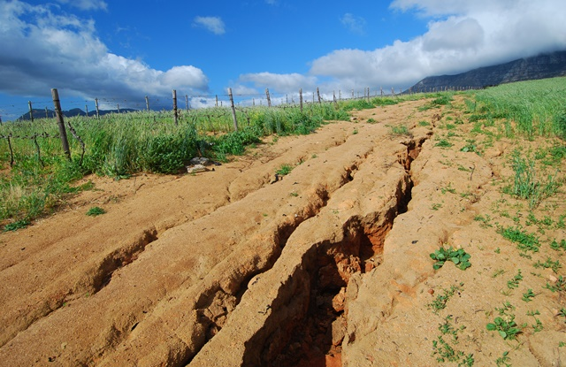

O processo de Degradação do Solo ocorre por diversos motivos e
resulta na perda da produtividade, além de causar impactos socioambientais.
Esse problema geralmente é causado pelo
mau uso e má conservação, consequências de processos naturais ou das atividades humanas.
Veja abaixo alguns fenômenos que causa essa degradação:
É o processo de degradação e esgotamento do solo. Mesmo tendo causas naturais, os principais influenciadores da desertificação é o desmatamento, queimadas, mineração, a irrigação incorreta e o uso intensivo do solo pela agropecuária.
É caracterizada pelo aumento da densidade do solo. Os principais motivos para isso são o pisoteio do gado, o tráfego de máquinas agrícolas e o manejo do solo em condições inadequadas de umidade.Esse processo faz com que as características físicas e químicas do terreno sejam alteradas, influenciando negativamente no crescimento e desenvolvimento de plantas.
É um processo natural, porém pode ser intensificado pela atividade humana.A destruição da vegetação natural remove a proteção do solo e resulta em um maior desgaste da superfície. Esse fenômeno também provoca uma série de outros problemas ambientais. Deslizamentos das encostas e morros podem aumentar a desertificação, o que torna o solo ainda mais infértil.
A medida que os anos se passam é possível notar, de uma forma gradativa, que o planeta sofre e enfrenta os mais
diversos problemas ambientais.
O homem, como o ser inteligente que é, tenta propor soluções caras e que acabam piorando a situação.
Pensando em soluções mais viáveis, a ONU criou 17 ODS's (Objetivo de Desenvolvimento Sustentável).
Hoje, estamos vendo uma degradação sem precedentes da terra e a perda de terras aráveis de 30 a 35 vezes a
taxa histórica. A seca e a desertificação também aumentam a cada ano, o que representa a perda de 12 milhões
de hectares e afeta as comunidades pobres em todo o mundo. Das 8.300 raças de animais conhecidas, 8% estão
extintas e 22% estão em risco de extinção.
A seguir, conheça um pouco da ODS 15.
15.1 Até 2020, assegurar a conservação, recuperação e uso sustentável de ecossistemas terrestres e de água doce interiores e seus serviços, em especial florestas, zonas úmidas, montanhas e terras áridas, em conformidade com as obrigações decorrentes dos acordos internacionais.
15.2 Até 2020, promover a implementação da gestão sustentável de todos os tipos de florestas, deter o desmatamento, restaurar florestas degradadas e aumentar substancialmente o florestamento e o reflorestamento globalmente.
15.3 Até 2030, combater a desertificação, restaurar a terra e o solo degradado, incluindo terrenos afetados pela desertificação, secas e inundações, e lutar para alcançar um mundo neutro em termos de degradação do solo.
15.4 Até 2030, assegurar a conservação dos ecossistemas de montanha, incluindo a sua biodiversidade, para melhorar a sua capacidade de proporcionar benefícios que são essenciais para o desenvolvimento sustentável.
15.5 Tomar medidas urgentes e significativas para reduzir a degradação de habitat naturais, deter a perda de biodiversidade e, até 2020, proteger e evitar a extinção de espécies ameaçadas
15.6 Garantir uma repartição justa e equitativa dos benefícios derivados da utilização dos recursos genéticos e promover o acesso adequado aos recursos genéticos
15.7 Tomar medidas urgentes para acabar com a caça ilegal e o tráfico de espécies da flora e fauna protegidas e abordar tanto a demanda quanto a oferta de produtos ilegais da vida selvagem
15.8 Até 2020, implementar medidas para evitar a introdução e reduzir significativamente o impacto de espécies exóticas invasoras em ecossistemas terrestres e aquáticos, e controlar ou erradicar as espécies prioritárias
15.9 Até 2020, integrar os valores dos ecossistemas e da biodiversidade ao planejamento nacional e local, nos processos de desenvolvimento, nas estratégias de redução da pobreza e nos sistemas de contas
15.a Mobilizar e aumentar significativamente, a partir de todas as fontes, os recursos financeiros para a conservação e o uso sustentável da biodiversidade e dos ecossistemas
15.b Mobilizar recursos significativos de todas as fontes e em todos os níveis para financiar o manejo florestal sustentável e proporcionar incentivos adequados aos países em desenvolvimento para promover o manejo florestal sustentável, inclusive para a conservação e o reflorestamento
15.c Reforçar o apoio global para os esforços de combate à caça ilegal e ao tráfico de espécies protegidas, inclusive por meio do aumento da capacidade das comunidades locais para buscar oportunidades de subsistência sustentável
Meu nome é Danilla Kelle, tenho 17 anos e moro no interior do Estado de Goiás. Curso o 3º ano do ensino médio, e participar desse curso foi uma experiência incrível. Aprendi coisas que jamais pensei que conseguiria fazer, tive o privilégio de conhecer pessoas extraordinárias que me ajudaram, fiz amigos, fui amiga e obtive inúmeros conhecimentos. Agradeço a Deus por essa oportunidade, ao Júnior Achievement, e ao Sérgio por ter sido um professor incrível.
Projeto desenvolvido durante o curso Meu Primeiro Site, promovido pela Junior Achievement Brasil e Microsoft.
Developed by Danilla Kelle